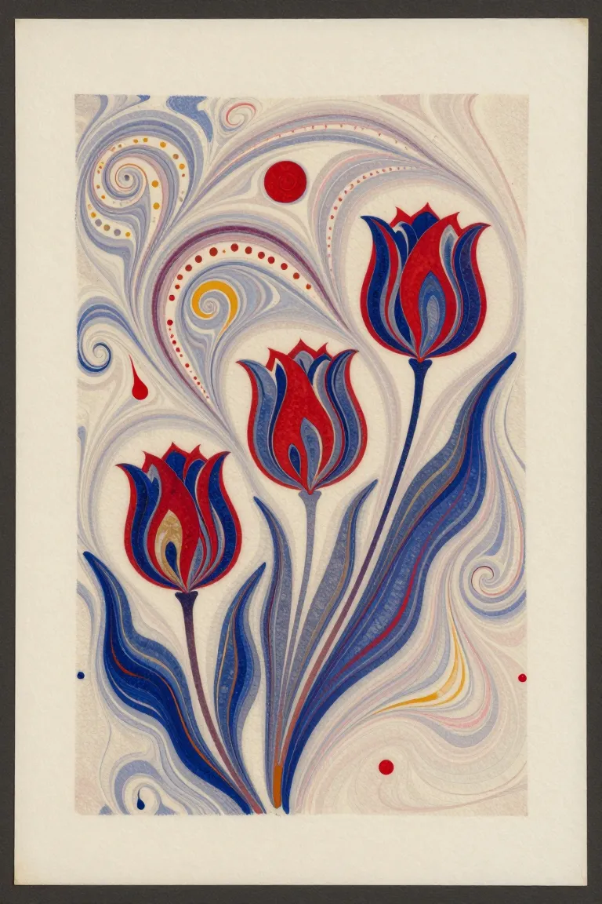

Pigment flyter på et tykt vannbad. Marmoreren kammer det til et mønster og legger et ark på det til ett monotypi. Hvert ark er unikt, med flytende årer, kammede krøller og blomsterdråper.

Kjerneidé
Et mønster som vannet og kammen lager sammen, og som ingen plate kan gjenta, gir et ark papir en levende overflate.
Designprinsipper
Lag hvert ark som ett avtrekk: la fargene flyte ut, kam dem og legg så papiret på dem.
Bruk 2 til 8 mineral- og plantepigmenter, og la hver flyte ut på badet med en pensel.
Tegn med en stylus, en kam og en vifte; hold årene i myke, flytende kurver.
La en dråpe spre seg til en ring og legg en mindre dråpe inni den, til en blomst.
Bruk en bunn av indigo, rødt eller sort og la årene stå i oker, hvitt og rødt.
Skjær eller ramm inn arket som en bort, et forsatspapir eller en kalligrafimarg.
Godta ujevn fargetetthet og en myk uskarphet i kanten av hver åre.